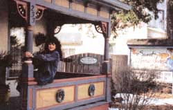
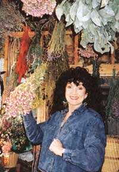
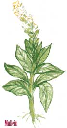
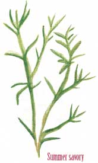
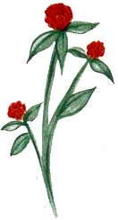
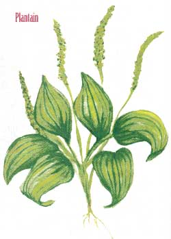
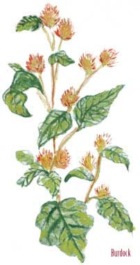
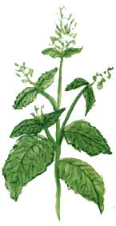

Home Remedies
Sweet Annies Herb Store.
Women stand mixing dried roots, barks, berries, and flowers in washtub-sized crates, their dust masks caked with herb dust, bags crunching as they pour more ingredients into the crates and restock. Whatever the season, Sweet Annie's Herb Store smells of drying plants, reminiscent of fall.
Once a mere hobby, growing, preparing, and storing herbal medicines has become a booming business for Ann Marie Wishard. She turned a sizable profit in her second year of selling herbs, and every year it got better. A two-woman operation in 1976, the herb store now employs 15. More than half her business is mail-order, though plenty of curious people stop by to browse at Sweet Annie's and to see the store's proprietor.
A middle-aged, fairly tall woman with dark hair and eyes and a penchant for black clothing and digging around in the dirt, Ann Marie Wishard is used to being considered an oddity.
"Everyone calls me a witch," she says. "You must have heard I was a witch from someone. Any time a woman uses her gift to heal another person, is seen dig ging in the dirt, or collecting herbs, people immediately think that she's a witch."
Although she doesn't in fact practice witchcraft, she does believe that if people take responsibility for the health of their minds and bodies, there are few things that cannot be alleviated by herbal medica tions. "Herbs and modern medicines can be combined with very few side effects to the patient when compared to modern medicines alone."
"And preventative medicine is the way of the future," she adds from her office at Sweet Annie's, where hanging and potted plants absorb each available ray of sunlight. Drying flowers swing from the ceiling, and a cup of herbal tea steams next to the computer on her desk. One of her well-behaved muts lounges on the hardwood floor next to the piles of papers and books she referred to while writing her now completed book, Herb Talk (Sweet Annie's Herbs, Inc., 1995).
It all began-the book, and the now booming home business-some time ago when Ann Marie lived in Tussyville, Pennsylvania. Wild plants surrounded her farm house and she began reading all she could about them-from their nutritional value to their vitamin content and healing properties. She remembers looking out a window into the meadow and thinking to herself, "We will never go hungry here" But when the weeds in the pastures began to appear on the dinner table, company became scarce.
In 1976, Ann realized that her fascination with herbs was so all-encompassing that making it her business seemed the logical next step. The world wasn't quite ready for the herb business, though. With an initial investment of $100 between her and her sister, they opened the garage door to their new herb store, and posted the name on an old piece of wood: "Tussyville Trading Post and Herb Farm."
"I was surprised at people's reaction to the store," Ann says. "They were scared to drink the teas I had made." The first year their gross income was a very modest $1,200. Over the next few years, though, word got around and curiosity brought more and more visitors to the store. By the third year, they grossed $45,000. The business was fun for her, but always just an elaborate excuse to go around "digging in the dirt and running amok."
Business reached a peak in the late 70s and has held fairly steady. Since then, Ann has moved to Centre Hall, Pennsylvania, where she kept the simple lifestyle and the store but changed its name to Sweet Annie's Herbs. "Some people think that I am calling myself sweet," Ann says, "but really the name came from an herb that we planted the first year. It's taking over the town; people just don't know it yet." And it is. When people mow their lawns, there is no longer a freshcut-grass smell but something more like parfume de camphor-the pervasive aroma of Sweet Annie.
It's hard to make a living at this business, but I love it. Nothing but the love of herbs and people would keep me in this:" The business used to keep track of mail-order customers on card files, but with a current active mail-order list of over 14,000 people, they were forced to use computers. "I hate to change," Ann said. "If it wasn't for my son, I wouldn't have spent so much on a 1-800 line and these computers. I wanted to keep my card files and my little black rotary phone:"
She believes radio shows have given her the edge she needed to get the business going, particularly the mail-order business. "It's the best advertising I have ever experienced," she says. "We used to have one or two a week, but sometimes now we are doing five or six, and all over the United States as well as Canada:"
People call up and ask questions, while Ann gives advice. "When I say that red clover does something, every store in the range of broadcast sells out of it. I have even had people tell me that they have pulled their cars to the side of the road while listening to me on the radio and begin to write down what I was saying on the show."
Here are a few of Ann's favorite herbs, their uses, and some methods for storing and preparing them. The uses of herbs are plentiful and varied. Some plants have many healing properties and Ann has covered many of them in her detailed books, including discussions of their recommended dosages. The following herbs and their uses can also be found in Herb Talk.
Annie's Storage and Preparation Tips
Drying has the virtue of being not only the most common method of storing herbs but also the easiest. Once they are completely dried, you can store them in a container, preferably an airtight one, for up to one year. Some herbs store better than others, but most can be safely stored dry. When drying herbs, you should keep them out of the sunlight, as this has a tendency to deplete their medicinal value. Keep them free of d ust and dirt as well.
Tinctures and extracts are another way of storing herbs. They have an almost indefinite shelf life, mostly because of the alcohol. Start by putting the herb in some brandy and placing it in a warm place for about three weeks. Once that is completed you can stop there or give the mixture a higher medicinal value by removing the original herb from the brandy and replacing it with fresh. This can be repeated as many times as you wish, and each time the medicinal value of the tincture strengthens. You can do this with witch hazel or vinegar as well, and the herbs can be dried or fresh, though dried herbs allow you to place a larger quantity in at one time.
Salves are useful for external applications and you can make them from lard, glycerin, or just about any oil, including olive. Simply add the herbs to the base and warm it for an hour or so, allowing the oils in the plant to be released into the base. Once the extraction is completed, just add bee's wax to solidify the mixture and store in a cool place.
Summer savory, a common garden herb and sometimes weed, has many times proven its worth to the tea cabinet. Ann recommends three to four cups a day to help decrease the blood cholesterol level.
Red clover is one of Ann's favorite herbs. Red clover is good for any ailment that would benefit from purifying the blood, and is one of the main ingredients in Sweet Annie's Herb Store's Cancer Therapy Tea. Ann says some of her customers who are cancer patients drink three cups of red clover tea every day to help purify their blood, and have discovered that the clover may also be helpful in counteracting the nausea that usually accompanies chemotherapy treatment.
Mullein is used for respiratory ailments. Placing an infusion of mullein leaves in a vaporizer can provide children and adults temporary relief of their coughing and wheezing. Coltsfoot tea can also relieve some respiratory complaints.
Berry leaves are especially useful herbs. Blueberry leaves regulate blood sugar and can be beneficial for those with fluctuating blood sugar. Ann says raspberry leaves are great for pregnant women in their last trimester, and are also useful for ailments related to mucous membranes, including sore throats. Blackberry leaves are also effective for soothing the intestines during a bout of diarrhea.
Plantain has been used in poultices (mashed up) to soothe boils and other skin irritations.
Alfalfa , a common crop to many farm ers, when taken as a tea, is cleansing of the liver and is beneficial when used for such problems as allergies, diabetes, and arthritis.
Anise seed and the herb Queen Anne's lace provide relief from gas and digestive problems.
Burdock root is one of the most annoy ing herbs to pet owners. The burs always seem to find a way onto livestock and pets, but the root of the plant is one of nature's own most powerful blood purifiers aside from red clover. It stabilizes normal body functions and aids in the urinary tract and prostate roles.
Catnip and white willow have similar qualities. They calm and relax, relieve headaches, and can also relieve fever and upset stomach.
Something to keep in mind when collecting these and other herbs on your own is that many of them have similar physical characteristics to other separate and similar species which may be potentially toxic. Be sure of the herb you are collecting and never harvest more than you may need. Also, you may want to leave a few plants remaining after your harvest to ensure future crops.
A bit of judiciously selected herbs slipped into your morning's tea may seem like too modest a step toward better health, but the fact is that many ailments that are considered unavoidable, such as stomachaches and headaches, can be effectively treated and/or prevented with herbal medications. Herbs are best regarded not as magical cures but rather as natural tools, as old as civilization itself, which help our systems work more efficiently.
When taking herbs as supplements or medication, be sure to consult your physician before changing your regular regime. After that, a trip to the library will yield not only field guides to help in herb identification but also brochures from the local agricultural extension service to help in growing and harvest.
To request a catalog from Sweet Annie's Herb Store call (800) 995-HERB.
Dr. Dickson's Herbal Foot Care
The pharmacies are littered with 'em. Foot powders and athlete's foot treatments and ointments and creams and sprays ...all very attractive but expensive avenues towards healthier feet. Those readers who have become familiar with my herbal remedies won't be surprised when I suggest that there are natural treatments capable of replacing virtually all of the tubes and canisters lining your medicine cabinet. Here goes.
Let's start with just plain tired feet. You can start by placing some cayenne pepper inside your socks prior to putting them on your feet. Cayenne can be purchased in the spice department of most grocery stores where it is sometimes called red or hot pepper. The botanical name for it is capsicum and it forms the basis of numerous prescription ointments. In pharmaceutical terms, cayenne acts as a rubefacient (stimulates blood circulation) and draws blood toward the surface of the skin. This results in your feet simply feeling much less tired. Be careful, however, when using it so you do not get it near your mouth or eyes.
Once you get home, you can make a terrific foot bath by pouring one quart of boiling water over 5 handfuls of silver birch bark and steeping for 20 minutes. Strain off the bark and pour into a container large enough to accommodate both feet. You should begin to experience immediate relief. An optional bath remedy can be made by placing a cup each of mint, lavender, and calendula leaves in a pan of boiling water. As soon as it has cooled down sufficiently you are ready to soak your feet. The lavender not only helps to make for an effective remedy but also adds a very soothing fragrance in the bargain.
Victims of foot odor are usually the brunt of jokes, unless you happen to live with a few. Proximity tends to make foot odor measurably less funny, and there's something you can do about it without spending $10 on charcoal shoe inserts. Just soak your feet in a hot pan of water to which has been added some baking soda and vinegar. Of course, you will want to put on some socks and shoes once you have dried your feet so no one will accuse you of smelling like granny's kitchen during pickle season. This remedy is effective because foot odors are the result of simple bacteria accumulating on the surface of the skin. These bacteria are put out of their misery in short order by the baking soda-vinegar combination.
Finally, for those miserable little corns that can quickly take the dance out of your step, don't forget our old friend the onion. While a large slice of fresh onion can do wonders to enhance the taste of a hamburger, it also has numerous medicinal qualities, one of which is in the treatment of corns. Place a slice of raw onion over the corn each night, bandage, and tape. In about two weeks it should be gone. - Dr. Charles Dickson, Ph.D.
|
 Undaunted by first-year sales of just $1,200, Ann let patience and care do the rest. |
 Now a local celebrity, Ann gives ""on-the-air"" herbal advice every week. |
 |
|
 |
 |
 |
|
 |
 |
|